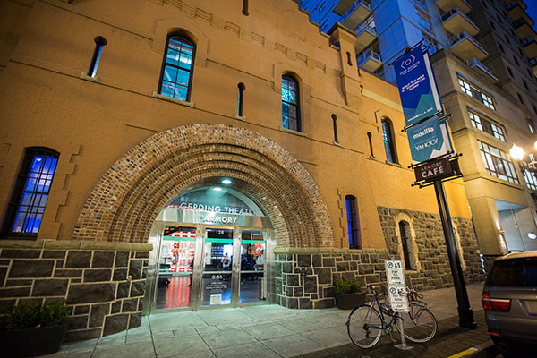
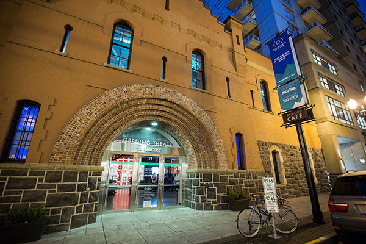

View Source
Presented by Mozilla
Build the Web of Tomorrow, Today
About View Source
View Source is a conference for front-end web developers. The goal
of this event is to provide an in-depth, practical look at current
and on-the-horizon technologies, with plenty of opportunities for
conversation.
At View Source, we share best practices for improving how websites
are built across platforms and devices, with technical talks exposing
these best practices with practical development techniques. By
exploring what is and is not working on the web of today, we can
view the source of the modern web and pave the way for the web of
tomorrow.
Our first event, View Source 2015, was held in Portland, Oregon,
November 2nd through the 4th at the Gerding Theater at the Armory.
More than 400 front-end developers, designers and industry leaders
came together to discuss the web of today and explore the possibilities
of the web of tomorrow. You can revisit the sessions from View Source
2015 (or discover it for the first time) below.
Join us for the next View Source conference!
Portland 2015
Sessions
Morning Session,
Keynote: The Web Today
Paul Ford
I will talk about the web today. Drawing on personal experience,
a study of the industry, and an awful lot of time spent reading
standards documents, I will talk about what makes a person a web
person.
Realistic Responsive Design
Inayaili de León Persson
In an ideal scenario, when you’re going to convert a non-responsive
site into a responsive one, you start from scratch and do everything
right and perfectly from the beginning. But in reality, starting from
scratch is simply not practical or possible for many (or even most)
projects. So what can we do to overcome some of the most common obstacles
and still get to that elusive, mobile-first, responsive site? In this
talk, I’ll go behind the scenes through the nitty-gritty of a real
world responsive retrofitting project, and provide useful tips that
can be put in practice by other teams facing similar challenges.
Web Accessibility:
Making Websites Better for Everyone
Stephanie Hobson
Making our sites easier to use for users who face vision or mobility
challenges makes them easier for everyone to use. From larger hit
areas to clear indications of state, we’ll cover a few simple things
we can start and stop doing with CSS to make websites faster to
navigate with a keyboard, easier to use with a coarse pointer, and
usable even without visual formatting.
Mid-Morning Session,
Advanced Front-end Automation with npm Scripts
Kate Hudson
With the release of npm 3.0, it's never been a better time
to consider using npm scripts for automated front-end workflows.
Web Security Made Easy
Albert Yu
We will take a look at security related bad practices for
using common JS template libraries, and explore solutions.
We will provide a deep dive into why this solution works.
Learn more about HTML5 parsing, various attacks, and how to
use our open sourced solution to prevent them.
Afternoon Session,
Graphics for Web Devs
Jarrod Overson
React has popularized the notion of deferred rendering via
a “Virtual DOM” despite the concept being universally ridiculed
shortly after React’s announcement. Deferred rendering is not
a new concept, it wasn’t born out of Facebook - it is an extension
of established practices tailored to the web. Sometimes it’s
useful to take a step (or 20) to the side, solve a new problem,
and see how it affects your perspective when you return to
daily life. In this session we’ll learn how to build a particle
system from scratch, render it to HTML5 canvas, and then circle
around and link the concepts back to modern web application
development.
SVG For Web Designers (and Developers)
Sara Soueidan
SVG is great and we know it's capable of so many things that
can help improve our workflows and deliverables. In this talk,
we will introduce what's possible in SVG, what tools we have
at hand to help us work with and integrate SVGs into our workflows,
and show how and why SVG to use SVG in production today.
The Missing Slice
Lea Verou
Think of the humble pie chart. Simple and ubiquitous, yet
surprisingly difficult to create with Web technologies in a
flexible, maintainable way. Faced with this simple goal, Lea
will take you on a colorful interactive journey through several
aspects of CSS and SVG and will sweep you off your feet with
clever ways to use them. At the end, you will have your pie
and animate it too, but do not be fooled: the real takeaway
of this talk has little to do with pie charts and a lot to do
with problem solving via the tools the Open Web Platform
offers us today.
Morning Session,
Keynote: The Triumph of Generalism
Lyza Danger Gardner
We want to be good at what we do, but the web keeps getting
more complex. When we try to stretch and understand it all,
we inevitably fall short. We languish in imposter syndrome
and doubt. But, slowly, we’re realizing the power in being an
expert generalist.
Life for virtuoso generalists is challenging, though. What
are our technical touchstones in such a vast sea? And how can
we get things done while also satisfying our needs for mastery
and accomplishment?
Signal Processing, Perceptual Audio, and the Web Audio API
Myles Borins
Let’s use the web audio api to learn about the basics of
signal processing and how to brain perceives sound.
State of the Animation, 2015
Rachel Nabors
The post-Flash era is hardly free of animation. CSS animation
is quickly becoming a cornerstone of user-friendly UI frameworks,
and JavaScript libraries already exist to handle complex,
interactive animations. And now there’s a new API coming to
town specifically for web animations! In the wake of so much
“CSS vs. JavaScript animation” infighting, you'll be introduced
to the Web Animations API via the development styles and insights
of four distinct groups of people: UI designers, interaction
developers, library authors, and the browser teams implementing it.
Mid-Day Session,
Building a Virtual Reality Web Experience
Josh Carpenter
The MozVR team shares new tools and techniques from the bleeding
edge of the immersive web. What is WebVR? Why should we care?
What will we do with it? What can we build today? By the end
of this session, attendees will have the know how to build and
publish their own VR experiences, so they can start helping
create the answers.
Web Apps, IoT, and Wearable Tech: Connecting the Dots
Tom Wesselman
All around us, sensor-enabled ‘things’ and beacons are beginning
to come online, reaching out to connect and exchange information –
precursors to a much larger and more complex framework that most
consider the ultimate promise of the IoT. Connecting, interacting,
sharing, storing, and over time perhaps learning and predicting
based on our habits, behaviors, location, preferences, purchases,
and more. This session will explore what it is today, some possible
directions on where it can go and what it might ultimately look
like, major questions that this new framework raises, the role
of wearable tech, and the technology gaps pending that must be
resolved to achieve a cohesive, secure, scalable, and beneficial
network of ‘things’.
Afternoon Session,
ECMAScript 2015: Why It Took So Long
Allen Wirfs-Brock
A new, modern specification for JavaScript has finally arrived.
ECMAScript 2015 was fifteen years in the making and significantly
extends the capabilities and usability of JS. This talk explains
why it took so long by exploring at some of the technical
and political challenges invoked in updating the world’s most
widely used programming language.
The Web, Reborn
Chris Wilson
The web has many unique and amazing attributes - low friction,
reach, discoverability - but it has also suffered from poor
reliability, low engagement, and in general a bad user
experience of “apps” built on the web. This doesn’t need to
be. With new capabilities like Service worker and push
notification, and careful design of your web applications,
killer web experiences are possible. It’s a new world. Let’s
take a look at how it fits together.
Closing Keynote: The Future of the Web
David Bryant
The Web of 2020 will be a very different Web. People who
predict the future are often spectacularly wrong so I’m not
going to try and do that. I do, however, want to identify
a number key ideas that I think are fundamentally shaping
the Web.
Venue

View Source 2015 was held at the historic Gerding Theater at the
Armory in Portland’s revitalized Pearl/River District. Widely noted
as the “crown jewel” of the Brewery Blocks redevelopment, the
newly-renovated Armory has been recognized as one of the world’s
greenest buildings.
About View Source
View Source is a conference for front-end web developers. The goal of this event is to provide an in-depth, practical look at current and on-the-horizon technologies, with plenty of opportunities for conversation.
At View Source, we share best practices for improving how websites are built across platforms and devices, with technical talks exposing these best practices with practical development techniques. By exploring what is and is not working on the web of today, we can view the source of the modern web and pave the way for the web of tomorrow.
Our first event, View Source 2015, was held in Portland, Oregon, November 2nd through the 4th at the Gerding Theater at the Armory. More than 400 front-end developers, designers and industry leaders came together to discuss the web of today and explore the possibilities of the web of tomorrow. You can revisit the sessions from View Source 2015 (or discover it for the first time) below.
Join us for the next View Source conference!
Portland 2015
Sessions
Morning Session,
Keynote: The Web Today
Paul Ford
I will talk about the web today. Drawing on personal experience, a study of the industry, and an awful lot of time spent reading standards documents, I will talk about what makes a person a web person.
Realistic Responsive Design
Inayaili de León Persson
In an ideal scenario, when you’re going to convert a non-responsive site into a responsive one, you start from scratch and do everything right and perfectly from the beginning. But in reality, starting from scratch is simply not practical or possible for many (or even most) projects. So what can we do to overcome some of the most common obstacles and still get to that elusive, mobile-first, responsive site? In this talk, I’ll go behind the scenes through the nitty-gritty of a real world responsive retrofitting project, and provide useful tips that can be put in practice by other teams facing similar challenges.
Web Accessibility: Making Websites Better for Everyone
Stephanie Hobson
Making our sites easier to use for users who face vision or mobility challenges makes them easier for everyone to use. From larger hit areas to clear indications of state, we’ll cover a few simple things we can start and stop doing with CSS to make websites faster to navigate with a keyboard, easier to use with a coarse pointer, and usable even without visual formatting.
Mid-Morning Session,
Advanced Front-end Automation with npm Scripts
Kate Hudson
With the release of npm 3.0, it's never been a better time to consider using npm scripts for automated front-end workflows.
Web Security Made Easy
Albert Yu
We will take a look at security related bad practices for using common JS template libraries, and explore solutions. We will provide a deep dive into why this solution works. Learn more about HTML5 parsing, various attacks, and how to use our open sourced solution to prevent them.
Afternoon Session,
Graphics for Web Devs
Jarrod Overson
React has popularized the notion of deferred rendering via a “Virtual DOM” despite the concept being universally ridiculed shortly after React’s announcement. Deferred rendering is not a new concept, it wasn’t born out of Facebook - it is an extension of established practices tailored to the web. Sometimes it’s useful to take a step (or 20) to the side, solve a new problem, and see how it affects your perspective when you return to daily life. In this session we’ll learn how to build a particle system from scratch, render it to HTML5 canvas, and then circle around and link the concepts back to modern web application development.
SVG For Web Designers (and Developers)
Sara Soueidan
SVG is great and we know it's capable of so many things that can help improve our workflows and deliverables. In this talk, we will introduce what's possible in SVG, what tools we have at hand to help us work with and integrate SVGs into our workflows, and show how and why SVG to use SVG in production today.
The Missing Slice
Lea Verou
Think of the humble pie chart. Simple and ubiquitous, yet surprisingly difficult to create with Web technologies in a flexible, maintainable way. Faced with this simple goal, Lea will take you on a colorful interactive journey through several aspects of CSS and SVG and will sweep you off your feet with clever ways to use them. At the end, you will have your pie and animate it too, but do not be fooled: the real takeaway of this talk has little to do with pie charts and a lot to do with problem solving via the tools the Open Web Platform offers us today.
Morning Session,
Keynote: The Triumph of Generalism
Lyza Danger Gardner
We want to be good at what we do, but the web keeps getting more complex. When we try to stretch and understand it all, we inevitably fall short. We languish in imposter syndrome and doubt. But, slowly, we’re realizing the power in being an expert generalist.
Life for virtuoso generalists is challenging, though. What are our technical touchstones in such a vast sea? And how can we get things done while also satisfying our needs for mastery and accomplishment?
Signal Processing, Perceptual Audio, and the Web Audio API
Myles Borins
Let’s use the web audio api to learn about the basics of signal processing and how to brain perceives sound.
State of the Animation, 2015
Rachel Nabors
The post-Flash era is hardly free of animation. CSS animation is quickly becoming a cornerstone of user-friendly UI frameworks, and JavaScript libraries already exist to handle complex, interactive animations. And now there’s a new API coming to town specifically for web animations! In the wake of so much “CSS vs. JavaScript animation” infighting, you'll be introduced to the Web Animations API via the development styles and insights of four distinct groups of people: UI designers, interaction developers, library authors, and the browser teams implementing it.
Mid-Day Session,
Building a Virtual Reality Web Experience
Josh Carpenter
The MozVR team shares new tools and techniques from the bleeding edge of the immersive web. What is WebVR? Why should we care? What will we do with it? What can we build today? By the end of this session, attendees will have the know how to build and publish their own VR experiences, so they can start helping create the answers.
Web Apps, IoT, and Wearable Tech: Connecting the Dots
Tom Wesselman
All around us, sensor-enabled ‘things’ and beacons are beginning to come online, reaching out to connect and exchange information – precursors to a much larger and more complex framework that most consider the ultimate promise of the IoT. Connecting, interacting, sharing, storing, and over time perhaps learning and predicting based on our habits, behaviors, location, preferences, purchases, and more. This session will explore what it is today, some possible directions on where it can go and what it might ultimately look like, major questions that this new framework raises, the role of wearable tech, and the technology gaps pending that must be resolved to achieve a cohesive, secure, scalable, and beneficial network of ‘things’.
Afternoon Session,
ECMAScript 2015: Why It Took So Long
Allen Wirfs-Brock
A new, modern specification for JavaScript has finally arrived. ECMAScript 2015 was fifteen years in the making and significantly extends the capabilities and usability of JS. This talk explains why it took so long by exploring at some of the technical and political challenges invoked in updating the world’s most widely used programming language.
The Web, Reborn
Chris Wilson
The web has many unique and amazing attributes - low friction, reach, discoverability - but it has also suffered from poor reliability, low engagement, and in general a bad user experience of “apps” built on the web. This doesn’t need to be. With new capabilities like Service worker and push notification, and careful design of your web applications, killer web experiences are possible. It’s a new world. Let’s take a look at how it fits together.
Closing Keynote: The Future of the Web
David Bryant
The Web of 2020 will be a very different Web. People who predict the future are often spectacularly wrong so I’m not going to try and do that. I do, however, want to identify a number key ideas that I think are fundamentally shaping the Web.
Venue
View Source 2015 was held at the historic Gerding Theater at the Armory in Portland’s revitalized Pearl/River District. Widely noted as the “crown jewel” of the Brewery Blocks redevelopment, the newly-renovated Armory has been recognized as one of the world’s greenest buildings.